Descarregue aqui ficheiros de apoio a este texto
No contexto digital, composição (compositing) designa o processo de juntar digitalmente múltiplas imagens ou elementos para criar uma imagem final.
A gradação e correção de cor é um processo associado à etapa de pós-produção que permite alterar a informação relativa a cor de um filme ou imagem.
A composição baseada em nós é uma forma sofisticada e bastante flexível de trabalhar, permite organizar o processo como um gráfico, com um layout bastante intuitivo, desde os elementos de input até ao output (render final composto)
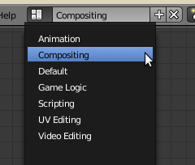No Blender, o processo de composição é feito através de nós numa janela designada por Node Editor. Se preferir, pode mesmo utilizar uma interface desenhada especificamente para este fim.
[Esta configuração aplica-se sobretudo ao motor de renderização Blender Internal Render. No motor de renderização Cycles, a profundidade de campo pode configurada diretamente nas opções da câmara se assim o preferir.]
1- Crie uma cena onde seja fácil perceber o efeito de desfocagem (por exemplo: uma fila de cubos, etc.). No nosso caso, utilizámos um Array de Suzannes.
Inserimos uma Suzanne (Add > Mesh > Monkey) e rodámos o objecto 90º no eixo X. Aplicámos um modifier Subdivision Surface e Smooth (botão no painel de ferramentas). De seguida, aplicámos um modifier Array (Count: 10) com um Relative Offset de -3.500 em Z (Z porque é relativa aos eixos originais/locais do objecto! No momento em que foi inserida, a Suzanne estava “deitada”, foi por isso que a rodámos 90º...)
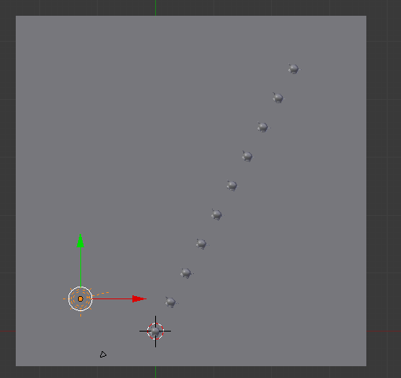Inserimos um plano (Add > Mesh > Plane). Modificámos a escala (S) aumentando 30 vezes. Ajustámos o posicionamento do Array de Suzannes e do plano.
A lâmpada é de tipo Sun.
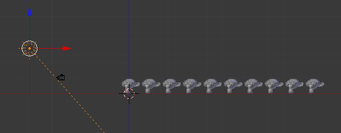2- Posicione a câmara de forma adequada.
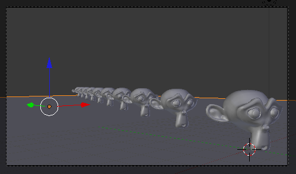3- Adicione um Empty e coloque-o no local/área onde pretende focar.
No nosso exemplo, colocámos o Empty ao lado da 3ª Suzanne (ver cursor 3D).
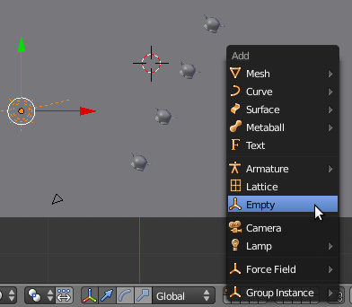Pode atribuir um nome ao Empty (sugestão: “focagem”). Nós utilizámos o nome original...
4- Seleccione a câmara, no painel de propriedades da câmara, active o botão Limits para surgir uma linha (laranja) que identifica a distância renderizada. Introduza o nome que atribuiu ao Empty na caixa Depth of Field (basta clicar na caixa que surge um menu com os vários objectos presentes na cena) para a focar no objecto escolhido. Ou seja, estamos a definir o Empty como um alvo para a focagem. Deste modo, será depois bastante fácil animar a (des)focagem através da manipulação/animação do Empty com keyframes.
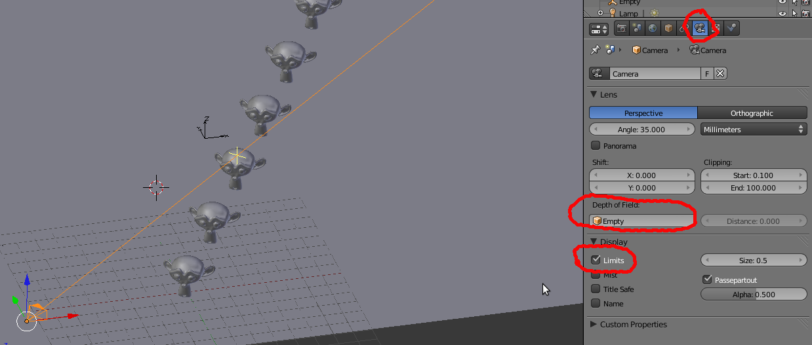5-Active a janela Node Editor. Clique para activar os Compositing Nodes, Use Nodes e Backdrop. Deverá surgir uma janela semelhante à da imagem abaixo.
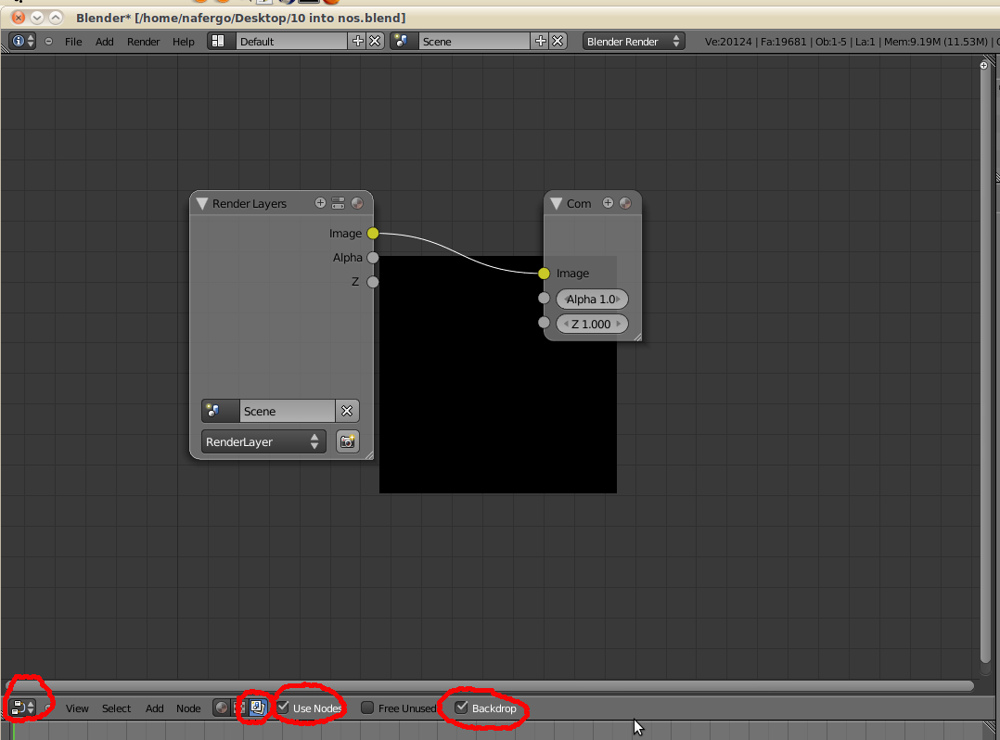6- Clique em F12 para criar um render. Depois faça ESC para voltar à janela Node Editor. A área “Backdrop” deverá agora exibir o seu render. A dimensão da imagem é determinada pelas definições no painel Render. No nosso caso, como não modificámos as pré-definições, temos 50% de 1920x1080.
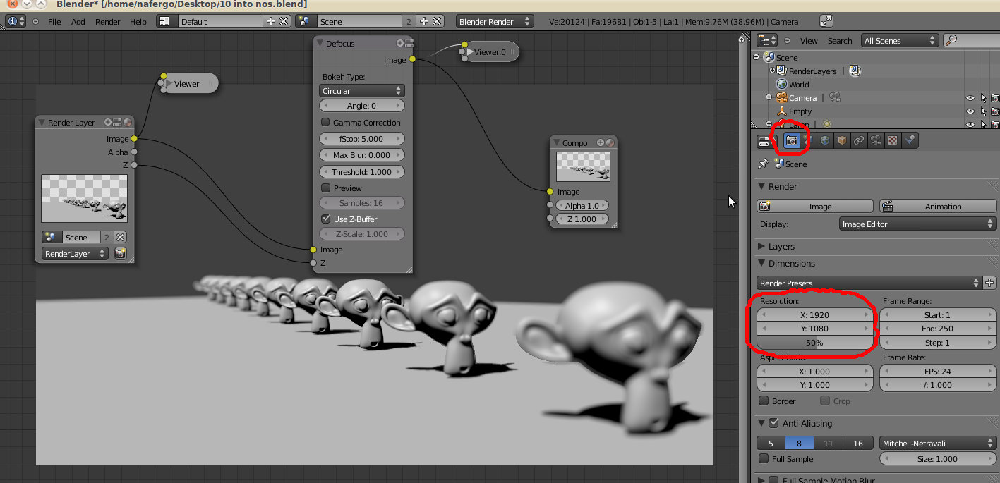7- Na sua janela deverá ter 2 nós: Render Layers (input) e o Composite (output).
Aceda ao menu “Add”, escolha a opção “Filter” e adicione um nó “Defocus”. Configure os parâmatros de acordo com a imagem abaixo.
Aceda ao menu “Add”, escolha a opção “Output” e adicione um nó “Viewer”. Na imagem abaixo estamos a utilizar 2 nós de tipo Viewer, pode repetir o processo ou seleccionar o “Viewer” adicionado e duplicar (SHIFT+D). O primeiro “Viewer” serve para vermos (no “Backdrop”) o render original. O segundo serve para vermos (no “Backdrop”) o resultado do nó “Defocus”. Não são necessários mas são extremamente úteis!
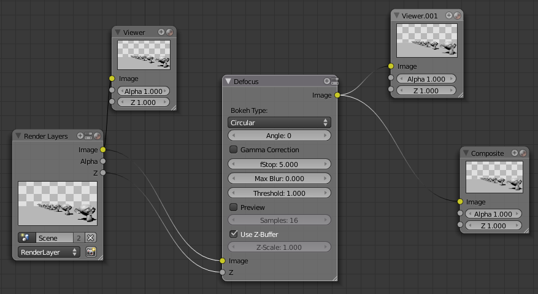Quando estiver satisfeito com o efeito Defocus, renderize (F12).
Alguns parâmetros do Defocus:
Bokeh type: nº de “lâminas” da íris da máquina fotográfica virtual.
Gamma correct: pode ser útil para tornar mais clara a área desfocada.
FStop: controla a quantidade de blur. Se diminuir o valor, aumenta o blur.
Maxblur: limitar a quantidade de blur na área mais desfocada.
Sugestão: anime o Empty para criar um efeito de (des)focagem animado.
1- Vamos utilizar a cena pré-definida.
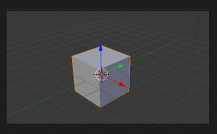2- Vá ao site http://www.flickr.com/photos/mcdemoura/4463485764/ e grave a imagem apresentada.
3- Active a janela Node Editor. Clique para activar os Compositing Nodes, Use Nodes e Backdrop. Clique em F12 para criar um render. Depois faça ESC para voltar à janela Node Editor. A área “Backdrop” deverá agora exibir o seu render.
4- Na sua janela deverá ter 2 nós: Render Layers (input) e o Composite (output).
Aceda ao menu “Add”, escolha a opção “Input” e adicione um nó “Image”. Clique em Open e carregue a imagem que gravou no passo 1.
Aceda ao menu “Add”, escolha a opção “Color” e adicione um nó “AlphaOver”.
Aceda ao menu “Add”, escolha a opção “Output” e adicione um nó “Viewer”. Na imagem abaixo estamos a utilizar 2 nós de tipo Viewer, pode repetir o processo ou seleccionar o “Viewer” adicionado e duplicar (SHIFT+D).
Configure a ligações entre os nós de acordo com o layout abaixo.
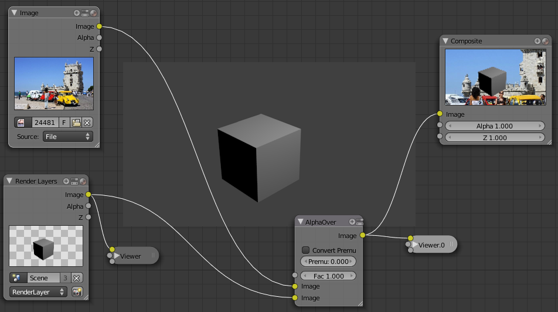5- Pode introduzir outros nós, experimentando novos efeitos. Veja o layout abaixo e respectivo resultado. O nó Scale permite manipular a resolução, é particularmente útil quando utilizamos inputs/imagens com resoluções diferentes.
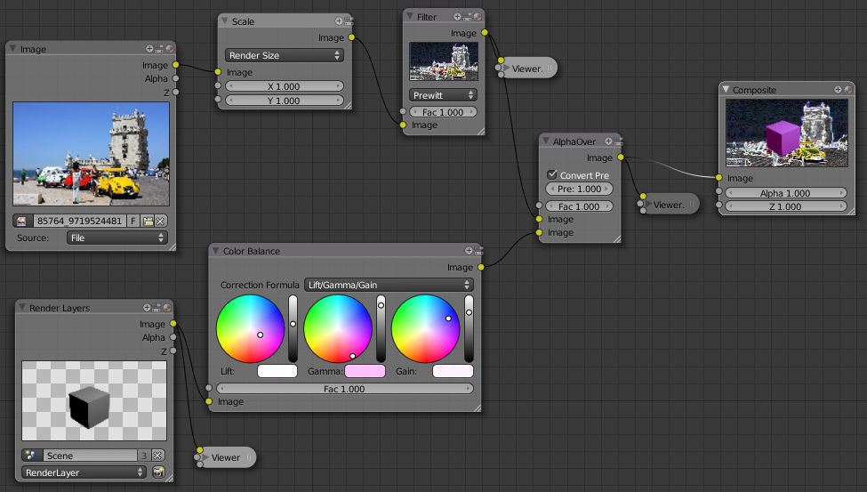 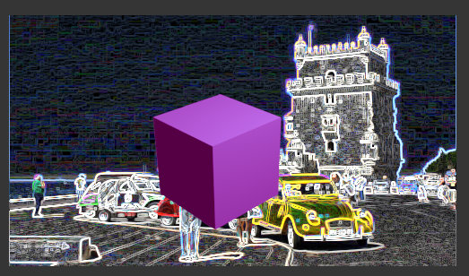1. Para este exemplo estamos a utilizar uma cena simples. Pode aplicar este efeito diretamente ao render (como no exemplo abaixo) ou aplicar por cima de uma imagem ou filme já existente. Temos o backdrop ativado no Node Editor, daí estarmos a ver o render no centro do editor através do nó Viewer.
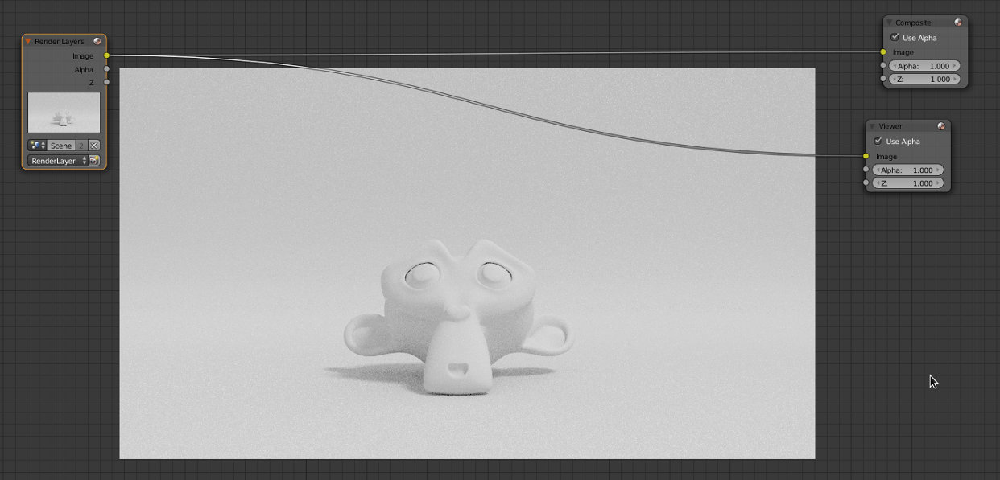2. Adicione uma Elipse Mask.
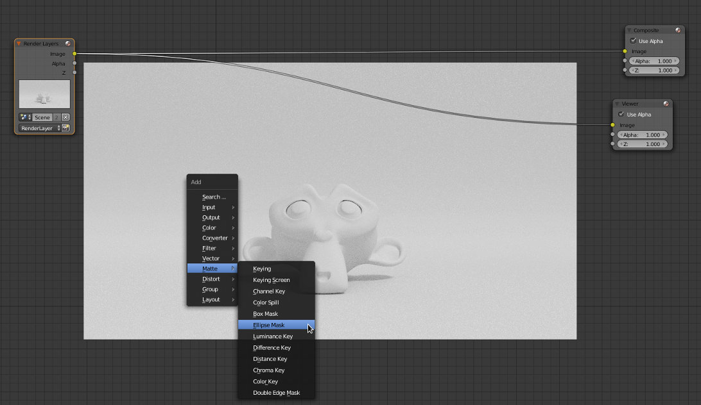3. Redimensione a Elipse Mask de modo a esta abranger a totalidade da imagem se esse for o efeito pretendido.
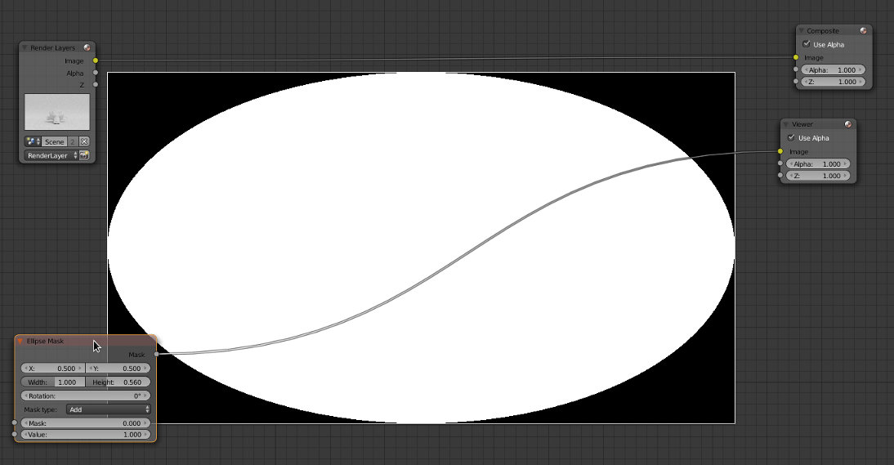4. Adicione o nó Mix (Color) mas altere para Multiply para conjugar os dois inputs (render e máscara).
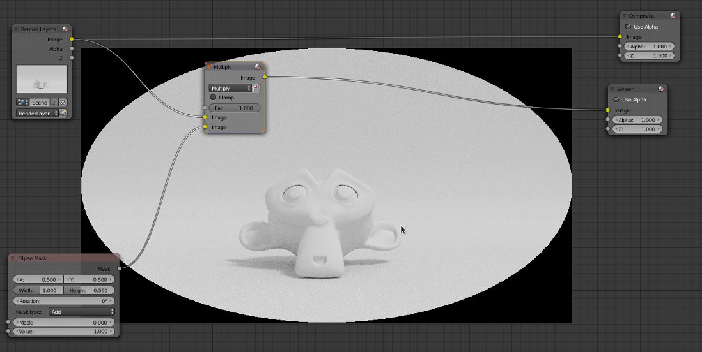 5. Introduza um nó Blur (Filter) para desfocar a máscara. No exemplo, estamos a utilizar o modo Fast Gaussian, Relative ativado e um desfoque de 20% em X e Y. 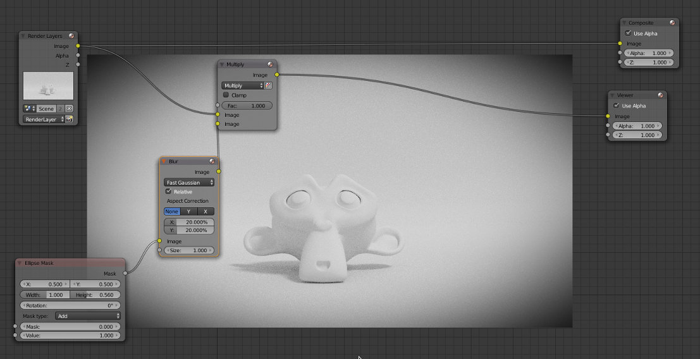O Node Editor permite implementar diversas operações com efeitos e correção/gradação de cor. Adicionalmente, existem várias formas para obter diferentes efeitos, com diferentes graus de dificuldade. Deverá conseguir o efeito apresentado abaixo em alguns minutos...
Utilizámos uma fotografia da ESEV e o nó Hue Correct (Color). Este nó permite ajustar os valores de Hue (matiz), Saturation (saturação) e Value (valor) de uma imagem através de uma curva com pontos. Incialmente, a curva é uma linha (sem alterações) mas depois é possível aumentar/diminuir os níveis de HSV nas diferentes cores. Pode adicionar novos pontos clicando com o rato em cima da linha no local onde pretende adicionar o novo ponto.
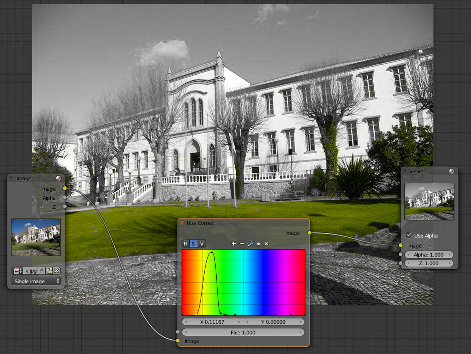 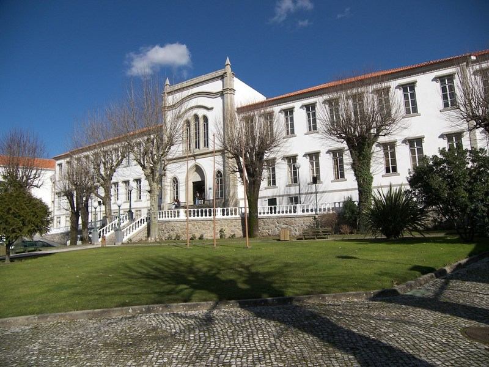 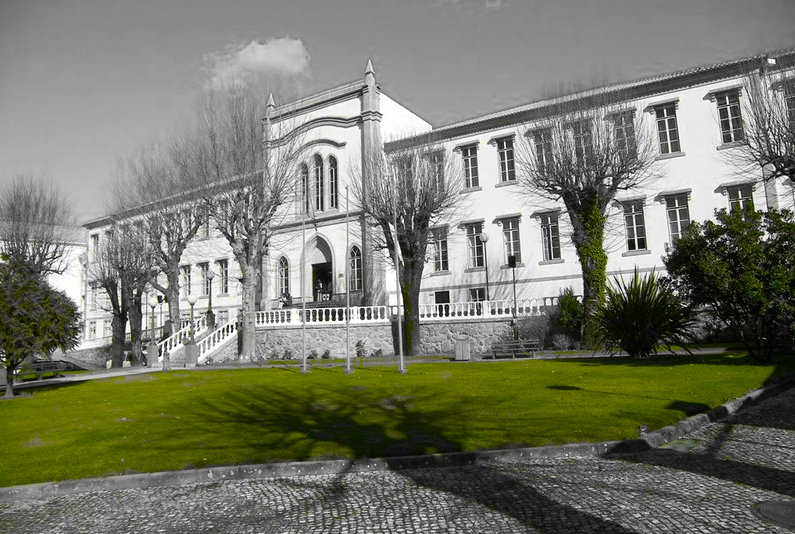1- Mude a interface para tipo Compositing. A interface apresenta 3 janelas: Node Editor, onde configura os nós; Image Editor, que permite ver o resultado; e 3D View em visão de câmara. Clique em Use Nodes e certifique-se que está a utilizar os Compositing Nodes. Não vamos utilizar o Backdrop.
2- Apague o nó “Render layers” porque não vamos utilizar o conteúdo da janela 3D e introduza um nó de Input do tipo Image. Clique em Open e insira uma imagem sua. Ligue o nó Image ao nó Composite e faça F12 para renderizar. O resultado da sua renderização deverá surgir na slot 1 da janela Image Editor.
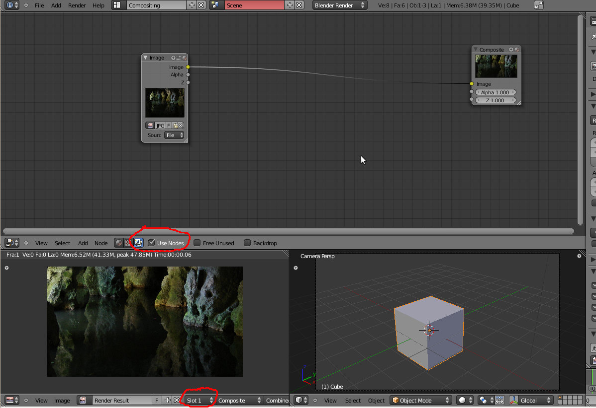3- Na janela Image Editor, passe para a Slot 2 e faça novo render. Esta nova slot passa a ser a slot activa. Ou seja, se desligar o nó Image do nó Composite, a imagem na slot 2 desaparece mas na slot 1 continua armazenado o primeiro render. Isto irá ser útil para poder ir comparando a imagem original com o resultado da configuração dos nós.
4- Introduza em sequência (do input-image para o output-composite) os seguintes nós: Scale (tipo Distort), RGB Curves (tipo Color), Blur (tipo Filter), Glare (tipo Filter), Chroma Key (tipo Matte) e AphaOver (tipo Color).
5- Veja a configuração abaixo e altere a seu gosto. Repare que a imagem de input está a ser utilizada 2 vezes.
Image > Scale > RGB Curves > AlphaOver > Composite
Image > Scale > Blur > Glare > Chroma Key > AlphaOver > Composite
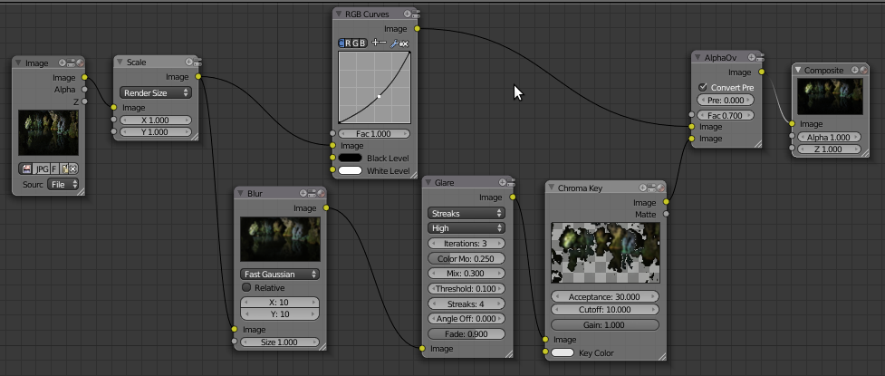6- Image: Imagem de input, imagem original.
7- Scale: Permite manipular a dimensão/escala da imagem de input. Utilizámos este nó para a imagem de input se ajustar/redimensionar tendo em conta a dimensão definida no painel de render.
8- RGB Curves: Controle/manipulação através de curvas de cada canal de cor (RGB) e da composição/combinação (C).
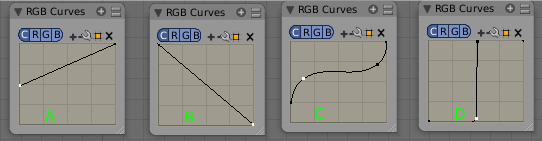9- Algumas configurações comuns: A = Iluminar; B = Negativo ; C = Diminuir contraste; e D = Posterize
10- Blur: Permite introduzir diferentes tipos de blur.
11- Glare: Permite introduzir brilhos intensos.
12- Chroma Key: Transforma uma cor ou variação de cores em transparência.
13- AlphaOver: Permite combinar/sobrepor 2 imagens.
14- Composite: Imagem de output, resultado que irá ser renderizado.
Eis a imagem inicial e o nosso resultado final.
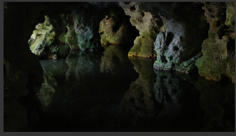 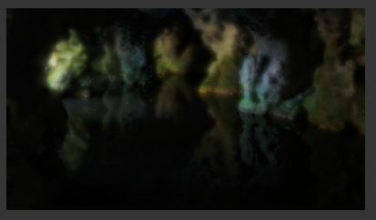15- Com o adicionar de novos nós, é fácil atingir um ponto de enorme complexidade. Para simplificar, pode agrupar nós. Na imagem abaixo, seleccionámos (Shift + BER) os três nós da linha de baixo e agrupámos os mesmos (Ctrl+G). Utilize Alt+G para desagrupar e TAB para editar ou visualizar o interior do grupo.
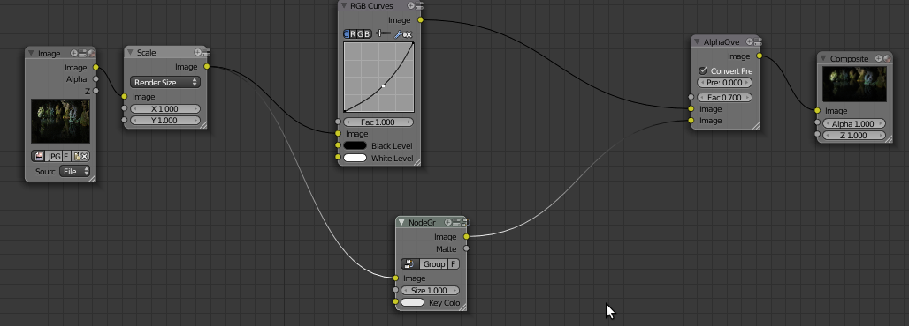A composição num vídeo já existente é um processo muito similar ao anterior.
1- Comece por descarregar o ficheiro “Blender Color Grading Preset_v2.blend” do endereço http://code.google.com/p/ft-projects/downloads/list?q=label:Blender
2- Abra o ficheiro no Blender. Utilize o nó Image já existente para carregar um ficheiro de vídeo.
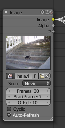Frames: nº de frames do vídeo.
Start Frame: Frame em que se inicia o filme
Offset: deslocação/compensação
Na imagem ao lado, podemos ver a frame 10 de um vídeo com 30 frames.
3- Na imagem abaixo podemos ver 6 configurações de nós que produzem resultados diferentes. Existe uma janela que mostra o resultado do Viewer (janela à direita) e outra que mostra o resultado do Composite.
Substitua as ligações existentes (no Viewer ou no Composite) para ver o resultado da aplicação de outros grupos de nós.
Se quiser espreitar/modificar a configuração dos grupos de nós, seleccione com o rato e clique em TAB para abrir o grupo.
A diferença de dimensão entre as imagens do Viewer e do Composite explica-se pelo facto da imagem do Composite ser um render, tem em conta as dimensões definidas no painel de render. Aqui está uma situação onde a dimensão da imagem de input (do vídeo) não corresponde à imagem de output (render). Ou seja, poderá ser útil utilizar o nó Scale (ver páginas anteriores)...
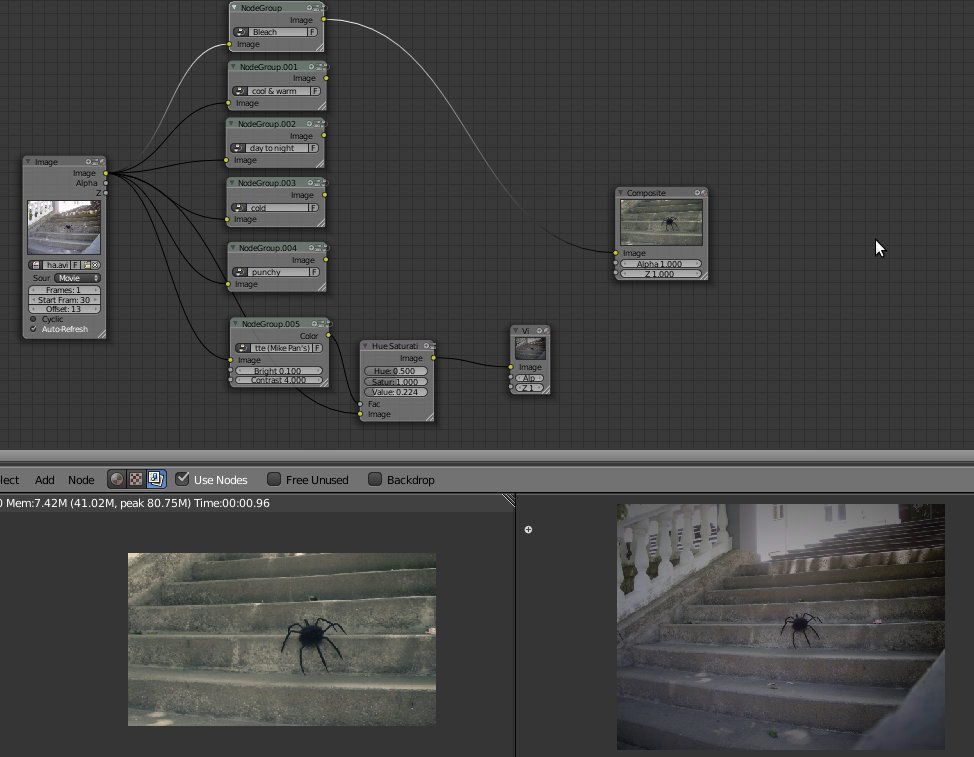4- O vídeo por nós utilizado é um AVI com 10 segundos, framerate de 3 FPS e uma dimensão de 800x600. Ou seja, o vídeo tem 30 frames.
5- No entanto, se atentar nas configurações do painel de render do ficheiro irá encontrar os seguintes parâmetros:
Dimensão: 25% de 1920x1080m (480x270)
FPS: 24 frames por segundo
Formato: PNG
Frame Range: da frame 1 à 250
6- Neste caso, se clicasse no botão “Animation”, iria criar 250 imagens em formato PNG e com dimensão 480x270. As primeiras 30 frames iriam mostrar parte da “aranha” do vídeo. Existem diversas inconsistências por resolver...
7- Formato: bastaria seleccionar um formato de output de vídeo. Poderia escolher o mesmo AVI ou aproveitar para converter para outro formato.
8- Dimensão: Pode utilizar o nó Scale (tipo Distort), mantendo as dimensões do painel de renderização. Pode alterar as dimensões no painel de renderizar.
FPS/Frame Range: se quisesse criar um filme exactamente igual ao do input, teria de mudar as FPS para 3 e o Frame Range para de 1 a 30.